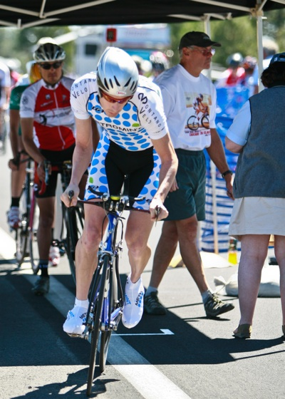
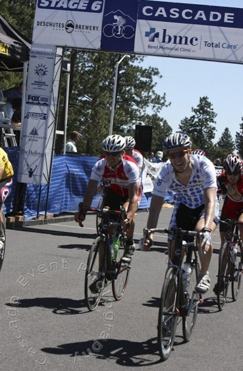

In September 2007, I ran into Uthman Ray, an old friend from Cal Cycling who had recently upgraded to Cat 1. Uthman asked how my racing was going, and I told him about my recent Cat 2 upgrade and my goal of upgrading to Cat 1 the following season.
"Do you have a TT bike?" he asked.
I said that I did.
"Ride the shit out of it," he said.
I took Uthman's advice to heart. All winter long, all of my long intervals were on the TT bike. Up and down Cañada Road, 20 minutes on, 6 minutes off. Back and forth. Pegging the PowerTap at 340 watts.
By the end of the Valley of the Sun stage race in February, I was sure that my efforts had paid off, as I placed 7th in the TT and 5th in the road race. But Valley of the Sun was mostly flat, and in training the TT so hard, I'd put on a few pounds of muscle and lost some of my ability to handle shorter bursts of acceleration.
I paid for my faster time trials in subsequent, more hilly races. At San Dimas, I finished a disappointing 14th in the opening hill climb. I dropped out of the Sea Otter circuit race after only 20 minutes. At Mt. Hood, I was stoked to place 4th in the opening TT, only to crack on the final kilometer of the next day's mountain-top finish, falling to 9th overall. At Fitchburg, I initiated the winning break, from which the two fastest of my break-mates took 1st and 2nd. I spent the last ten minutes climbing by myself and chanting, "Cat 1, Cat 1, Cat 1", only to be caught 200 meters from the finish. I've never felt so awful on the bike as I did that day.
I was frustrated as hell. I had 27 of the 30 points I needed for a Cat 1 upgrade. I was so close. But there was only one race left where I had any chance to earn the rest: Cascade.
Fitchburg had been four stages over four days of racing, finishing in on July 6 in Boston, Massachusetts. Cascade was also four stages, but packed into only three days of racing. It started on July 11 in Bend, Oregon. I had five days to rest. Five days to get over the most devastating near-win I'd ever suffered. Five days to get back to San Francisco, to try to be mentally present at my job, and then to pack the car and drive ten hours to Bend.
Madness. But the hell if I'd come this far only to try again next season. It was Cascade or bust.
I drove to Bend with my teammates Max and Julian. Julian had arranged for us to stay in host housing with John and Nancy Sorlie. John had planned to race Cascade in the master's division until he broke his collarbone in training only a week before. On Sunday, Nancy was organizing the kids' race, which all three of their children were all racing. John's parents lived in Bend and were hosting another two cyclists. They were an entire family of cycling patrons.
They also had the Versus channel on TV, allowing us to watch the Tour de France every morning during breakfast.
On Thursday night, we drove out to pre-ride the TT course. It was a dead-straight, out-and-back course, mostly uphill on the way out and mostly downhill on the way back, but with a slight uphill on the final kilometer. We estimated it would take just over 30 minutes to race.
It was perfect for me. Not quite hilly enough to favor the pure climbers who would dominate the mountain-top finish on Saturday, and long enough to take advantage of all the time I spent getting used to long efforts on my TT bike.
And it was hot. Not scorching, Texas-hot, but hot enough to hurt the guys that can't take the heat. After several races of near misses, I can't say how excited I was to see the odds stacking up in my favor. That night, the butterflies started in on my stomach.
We woke up Friday morning and ate a huge breakfast, since we had an hour-long downtown criterium in the evening in addition to the TT in the morning. We watched a bit of the Tour, got wished good luck by the Sorlies, and headed to the course.
There are two schools of thought on how to race a hilly time trial. One group says you should go significantly harder on the uphills and just hang on as best you can on the downhills. The logic behind this strategy is that since wind-resistance is non-linear, extra effort on the uphills pays off more than on the downhills.
Unless the downhills on a course are so steep that you spin out, I disagree. My reasoning is that human effort is also really nonlinear--if you put out twice the power, you won't last anywhere near half as long. So in in killing it on the uphill, you risk having virtually nothing left for the downhill. A little harder on the uphill is okay, maybe 10-20 watts, but not much more.
In the case of this particular TT, I also wanted to leave something in the tank for the final, uphill kilometer.
It was hot, and the course was longer than the 20 minute intervals I'd been doing in training. I had a 55-11 as my largest gear, so I was pretty sure I wouldn't spin out. I decided to peg the PowerTap at 330 watts on the way out, then give it all I had on the way back.
With my strategy decided, everything else became routine. I laid out the gear I would need in the race. I had Max spray-glue my number so it wouldn't flap in the wind. I set the bike up on the trainer. I drank a coke. I visited the port-a-cans at least three times. I started my warm-up.
An hour later, I was in the front of the line in the starting tent. The official said, "Thirty seconds." I watched the rider in front of me start, then grow smaller up the road. An organizer held my bike, and I clipped into my pedals. "Ten seconds." Deep, focused breaths. "Five, four, three, two, one."
A good TT start is five seconds of sheer panic, followed by a terrible anti-climax. In the first few seconds, it really is important that you get up to speed relatively fast. Doing so takes only a few fast muscle twitches, and it takes very little from the energy stores you'll need as the race continues. But once you're up to speed, with your adrenaline rushing and your 30-second man so close in sight, 330 watts feels like a walk in the park.
You stare at the PowerTap. Really? This is all? Surely I can go harder than this for 30 minutes. You know you can't. Your training, your previous races, the entire season has conditioned you to know your limits, to know the importance of pace. But you still have to fight it.
I certainly tried. Five minutes in, I checked the average power. 360 watts. Oh, fuck. I tried to let up, but a cut of 360 watts down to 330 isn't easy. It's hard to let up just enough, and the speck of a rider just 30 seconds up the road has a nasty habit of pulling you along. I tried to ignore him and focus on the numbers on the PowerTap. At ten minutes in, the average had fallen to 352. At fifteen minutes, it was down to 345.
Just before twenty minutes passed, I hit the turn-around, and my legs were feeling it. 336 watts. Suspiciously, though, I'd only passed a few people at that point. From earlier time trials, I'm used to passing plenty. Maybe I was going too hard, but at least the guys in front of me were, too.
The road surface on the return was terrible. I rattled down the hill, fingers white on the aerobars, sweat dripping into my eyes, my thoughts alternating between "Don't crash, don't crash, don't crash," and "Hammer, hammer, hammer." Whenever the road surface let up a bit, and I could take my eyes of the road for a minute, I watched the average wattage fall. Screamed at it. Hated it.
But I started to pass people. I'd see one up the road, vow to catch him, then having done so, shift focus to the next. My spirits began to lift.
Finally, the 1 km sign. In training with my PowerTap, I've learned that I can usually go harder by standing in the last minute of a long interval, as it seems to switch the muscles I'm using just enough to give an extra push.
I needed that push. I stood up, sprinting almost, with my arms still in the aerobars. I could see tent where the officials were sheltered from the sun at the finish. The road between us seemed impossibly steep. I yanked on the bars and drove the pedals down. I tried to convince my legs that it would soon be over. That yes, these next sixty seconds really did matter enough to make all this suffering worth it.
I came through the line barely sane enough to steer straight. I coasted to a stop, unclipped, and sat on the ground, panting.
Back at the car, Max, Julian, and I talked about the race. Neither Max nor Julian was happy with their rides. Max didn't even time his. We packed up the car, got some lunch, and headed back to the Sorlies' for a nap.
Several hours later, we rode to the crit course in downtown Bend. The officials had posted the TT times by the starting line of the crit course, and as I pushed my way through the crowd of riders looking at the results, Andy Goessling, a friend from the Bay Area, stopped me. "Dude, nice ride!" he said. "What?" I pushed forward. Where was my name?
3rd.
Holy shit.
I think I would have cried from happiness, but the pressure hit me first. The guy in 4th was 0.8 second behind me. The guy in 5th, 1 second even. Ian Boswell, who won Mt. Hood the year I was 3rd overall, was only 7 seconds behind, in 8th. 3rd place was going to be hard to hold onto.
Luckily, I had a crit starting in less than an hour to occupy my mind.
The crit itself was unremarkable. A small group of riders, none in the top ten, broke away early and held it for a few seconds advantage to the finish. I tried to stay near the front and not let anyone crash me out. Max and Julian were caught in the back from the start, and the course was too short and too tight to move up easily. We were all glad when it was over.
We grabbed dinner at a restaurant on the course, watched Chris Horner hammer at the front for what seemed like the entirety of the pro race, then headed back to the Sorlies'.
I fell asleep thinking about the mountain-top finish at Mt. Hood, where my lead going into the long stage had been far larger, large enough that I'd held on to 9th even after cracking terribly in the final climb. I couldn't afford to crack this time.
After Hood, my teammate Evan had pointed out where I'd gone wrong: I tried to stay with the leaders too long. In matching each of their accelerations, I'd followed my instincts to stay with the group, to stay in the draft. But on a finish that steep, the draft is almost useless. I'd have been better off riding my own pace, all alone if need be. It was a painful mistake, and one I vowed not to repeat in the morning.
I don't remember much of the first half of the long road stage at Cascade. It was long, and reasonably warm. I drank a lot. I focused on eating as much as I could.
My plan for the day was to play it conservative. I wasn't comfortable asking Max or Julian to work for me, given my past performances on mountain-top finishes. I didn't want them to kill themselves working for me, only to have me fail to deliver in the final pitches of the ascent. Luckily, our best individual strategies complemented each other.
Max had finished 29th in the TT and was sitting 2:04 behind the race leader. He's also a bit of a breakaway specialist, having recently placed 7th at San Dimas and 4th at the Tour of the Gila, both due to long breakaways. He hoped to do the same again at Cascade. That strategy was perfect for me, as having Max up the road would free me of any obligation to work at the front later in the race. I asked only that he not take anyone in the top 10 with him.
Julian, on the other hand, weighs something like 130 pounds, and not surprisingly, is a climbing specialist. He planned to make up time on the final hill, staying with the leaders and maybe even taking the stage. Unfortunately, a flat halfway through the race ruined his chances, leaving Max and I alone for the finale.
With around 30 minutes to go in the stage, Max made his move, breaking away with Chris Turner of Above Category. Chris was in 21st at 1:50 off the pace, so most of the top 10 felt no need to chase. Max and Chris quickly rode out of sight in the rolling hills running up to the final climb, and I thought for sure they had it made.
Unfortunately, the McGuire team had other plans. After Max and Chris had been away for a few minutes, three or four McGuire riders came to the front and started working hard to pull them back. To this day, I have no idea what they were thinking. Their top rider was in 38th place. None of them were particularly strong climbers. They weren't going to take the stage, and they weren't going to take the overall. If I were them, I would have waited and tried for a stage win on Sunday. But they didn't see it that way, and eventually they pulled Max and Chris back into sight. After that, the pace picked up as road steepened and the strong climbers came to the front. And that was the end of Max's chances.
Now it was up to me. I had no idea what the finish looked like. I estimated we had about 10-15 minutes left to race. I knew from experience I could hold around 380-420 watts for that long. Remembering the lesson from Mt. Hood, I waited until the pace went above 420, then held it there as the leaders rode away, sucking wheels as I could, and riding at the front when I had to.
The road steepened and flattened out several times, and that worked to my advantage. When it flattened out, all the leaders would start worrying about the draft again and slow down, playing cat and mouse with each other. I'd keep a steady pace and catch back on, at least until we hit another steep pitch.
With what I guess was about five minutes to go, I was really hurting badly. The leaders had pulled away again, and I was with around six to ten guys in a second group. I wasn't sure I could keep it up. I thought about Max, tried to convince myself that I had to deliver after how well his break attempt had set me up. But my legs ached.
And then we passed the Sorlies. They seemed to appear all of a sudden--John, Nancy, and the three kids--just standing on the side of the road, cheering like their lungs were going to burst. I momentarily forgot how much my legs were hurting and managed to raise a fist in thanks. I held the pace.
We left the highway shortly thereafter. After the turn, I expected us to enter a private road up to the ski resort, but I quickly realized we were already riding into a huge parking lot. This was it. The organizers had marked a loop around the lot with cones, with the finish on the far side.
All concerns about getting dropped left me. By my count, there were only 5-8 guys up the road, and now I wanted a top 10. I jumped up into a sprint. It was early, maybe 300 meters out, but the ground in the parking lot was rough, scarred by years of snow-plowing, and that lowered the impact of the draft, to my advantage. I also kept to the inside of the loop, forcing anyone that wanted to come around to do it on the outside. It felt more like the finish of a 'cross race than a road one.
And I held it, for what turned out to be 10th. I'd also lost very little time. Only Ian had moved ahead of me in the GC.
Max arrived at the finish not long after me, and the two of us flirted with a paramedic while we waited on Julian. Once he arrived, we rode back down to the cars, then went and ate lunch. Later that evening, we went up to John Sorlie's parent's house, where they fed us an amazing dinner. Their house overlooked the course of Sunday's circuit race, giving us our first look at the rolling hills we'd tackle the next day.
I was really nervous. This upgrade was mine to lose. I was in 4th overall, but I hadn't scored any points yet. The TT finish doesn't carry any points at all, and 10th in the RR was just outside the points. If I got a flat on Sunday, I might fall far enough behind to be outside the points for the overall, which end at 15th place. Everything would have to be perfect if I was going to get my upgrade.
Before the start of Sunday's stage, the head race official gave our field a long lecture about crossing the center line. Apparently it had been widely ignored the day before, and they planned to be extra strict about it this race, promising to disqualify anyone who went over it even once. "Great," I thought to myself, "just one more thing that can go wrong."
The first of the race's four laps was relatively calm, giving us a chance to survey the course. It rolled throughout and finished a mile or two after the largest hill, which was about four minutes long. It was a course well suited to my strengths, and I fully expected Max and Julian to help defend my placing.
Max got his first chance to do so early in the second lap. A small break had formed and put around 15 seconds on the pack. At first, I wasn't worried about it, as the race leader, Norm Bryner, had a large, strong team who I expected to defend his lead. Then one of Norm's teammates attacked and bridged across the gap while I was pinned against the curb on the right side, and Max and Julian were stuck further back in the field.
And that was it. A moment's loss of concentration had left none of us able to guard the front, and now we were really in trouble. With Norm's teammate in the break, we were the next strongest team with anyone in the top 10. Norm had 30 seconds over second place. He'd work to keep the break within that gap, but no closer. The break was now our problem.
Luckily for me, Max was on it. As soon as he was able, he worked his way to the front and started pulling. Almost single-handedly, he pulled he break back into sight and held it there until the excitement of the pack took over, and the group was back together shortly after the end of the second lap.
We were now two laps in, with one potential disaster averted. At first, it seemed as though the third lap would conclude without incident. Then, at the top of the descent before the final climb, the wheel motorcycle rode up and waved me over. "The official wants to talk to you," he said. "Drop back to the back of the pack."
Oh, shit. This news was bad for two reasons. First, it meant that at best I'd be starting the largest hill of the lap from the back. If a group of strong climbers attacked hard and forced a pack split, I'd be caught out. Second, whatever the official wanted to talk about, it couldn't be good.
"Julian!" I rode up to him and whispered the situation in his ear. I didn't want any of our competitors to realize we were vulnerable. As the pack descended the hill, he dropped back with me slowly, ready to help me work my way back up on the climb.
As we reached the official's car, I watched the distance between us and the front of the pack grow larger.
"Someone just told me you've been crossing the centerline," the official said to me. My heart sank. I was sure he was going to disqualify me right then.
"No, sir," I said. "I'm in 4th on GC, and 3 points from my Cat 1 upgrade. This race means too much to me to risk that."
"Well, I didn't see it myself," he replied, "so I'm not going to disqualify you yet. But I want you to know that I'm watching you, and if I see you so much as touch the line from now on, your race is over."
It was bullshit. I knew I hadn't gone over the line, but at this point I didn't care. "Yes, sir!" I said. I rode past his car and pinned my wheels to the curb, riding up to Julian to explain the situation.
We'd just hit the hill, and the front of the group seemed terribly far ahead. With only a lap to go, we were in a bad place. It was bad enough that we were in the back of the pack. We'd also have to stay far to the right as we moved up, avoiding the centerline at all costs. Worse still, glass and debris tend to congregate near the curb, increasing the chance of a flat during the last lap of the race.
And then it happened. Maybe it was adrenaline, maybe the pack was just taking it easy, but I suddenly felt impossibly strong. I climbed effortlessly through the crowd, finding a way through the right-hand side easily. We reached the front even before the top of the hill and tucked ourselves into the top 10.
I've only had that feeling a few times before, and to be honest, it made the entire season worth it. From that moment on, I knew I had the upgrade. No flat tire, no crash, nothing could derail me now. This was my race.
At the end of the final lap, a small group broke away near the top of the hill. Max was on it immediately, pulling it back just before the final kilometer. I sat on his wheel while he worked, putting me in perfect position to avoid any crashes in before the finish.
The last kilometer navigated through two traffic circles and a tight right turn. I had no intention of risking a sprint. All I needed was to finish in the group. I took the turn on the inside, as far from the centerline as I could be, and hit the finishing stretch just hard enough to hold the leaders, sitting up tall to anticipate any potential crash before it happened.
I came through the finish with a big, stupid grin on my face.
Cat 1.
This madness all started in the fall of 2005. At the time, I didn't think I'd ever make Cat 3. After one winter in the snow and two more in the rain, I was amazed to find myself anticipating an upgrade to Cat 1. I'm still a little amazed that I pulled it off.
I couldn't have done it without the support of so many other people. They put me up in their houses, loaned me their cars, took care of me when I crashed, consoled me when I lost, and congratulated me when I won. I'm in debt to you all. It was wonderful to have your support, and even more wonderful to watch you share in my excitement.
Now I have to find a new goal, and I'm not yet sure what it will be. But to those cycling friends still working on an upgrade, let me say this: your success will overwhelm your emotions in direct proportion to the hours you spend achieving it. It is the long winters that make the wins worth it.
Get out there and train.
|  |
| A few hard pedal strokes before settling into a rhythm at the start of the TT. |
|  |
| The "I am a Cat 1" smile. |
{kind=link}